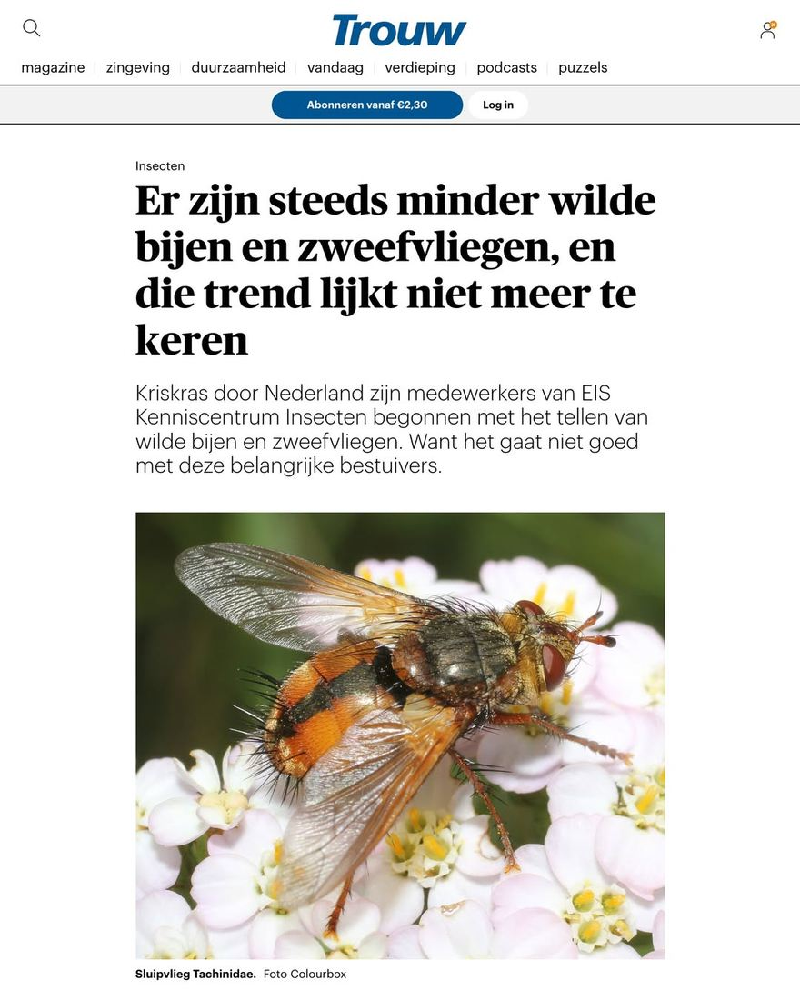

Sluipvlieg, geen wilde bij of zweefvlieg
- Op de foto
- Sluipvlieg
- Het ging over
- Wilde bij of zweefvlieg

Een artikel over het verdwijnen van wilde bijen en zweefvliegen, met bovenaan een foto van geen van beide.
Trouw zet het er zelf keurig bij: "Sluipvlieg Tachinidae". Het is er een uit het paar Tachina fera en Tachina magnicornis, twee soorten die je op een foto niet met zekerheid uit elkaar krijgt. De eerste heet in het Nederlands woeste sluipvlieg.
Sluipvliegen zijn een eigen vliegenfamilie met ruim 300 soorten in Nederland, en hun larven ontwikkelen zich inwendig in rupsen en in larven van wantsen en kevers. Met de bijen en zweefvliegen uit dit artikel hebben ze niets te maken.
Verderop in het artikel gaat het wel goed, met een zweefvlieg en een hommel. Alleen bovenaan, waar iedereen kijkt, niet.
Mooie foto hoor, alleen van het verkeerde beestje, Trouw!
Bron: EIS Kenniscentrum Insecten, dat in het artikel zelf aan het woord is.